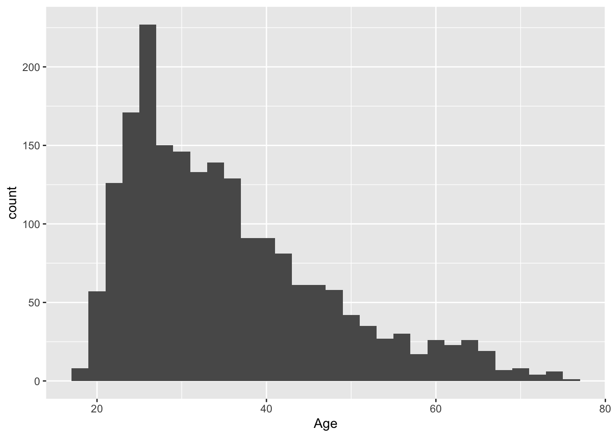
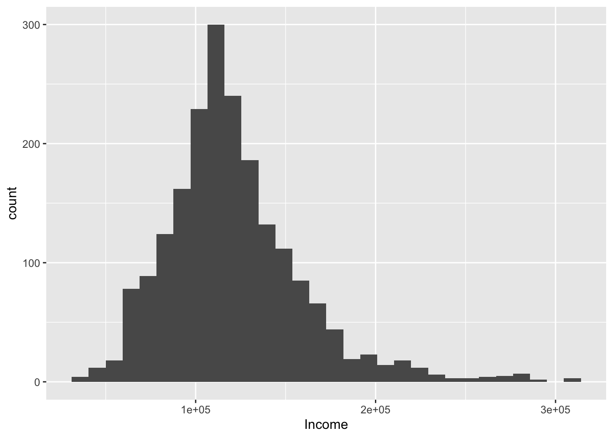
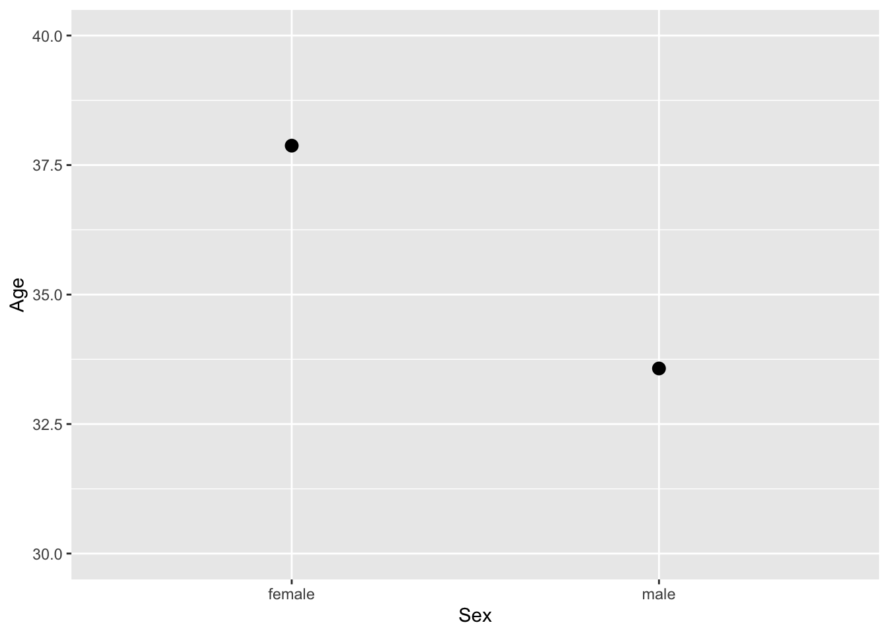
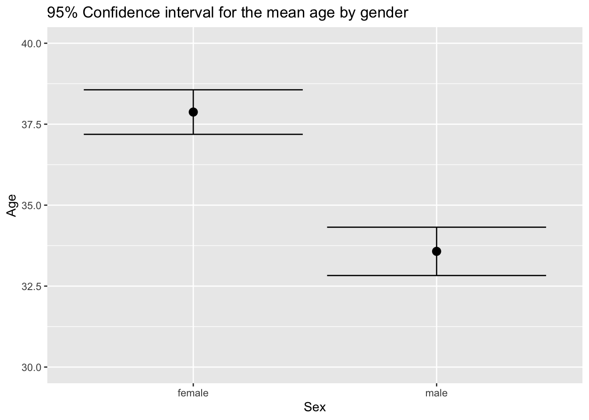
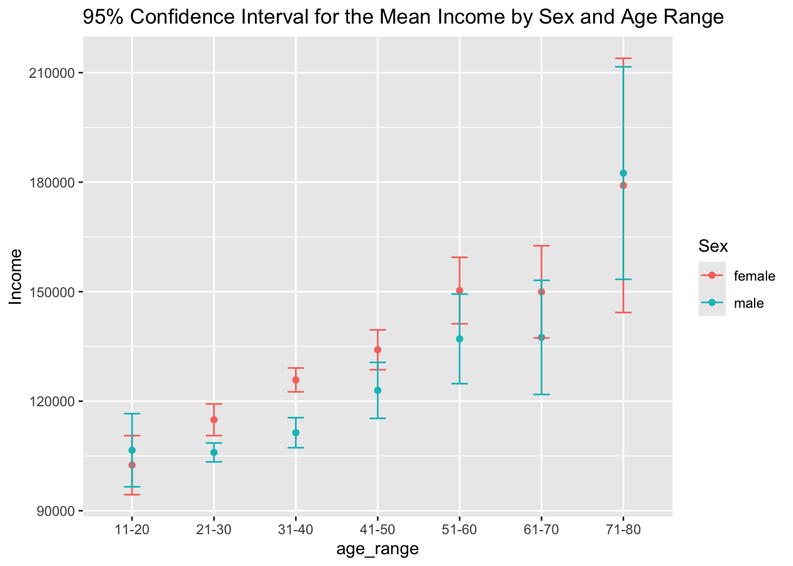
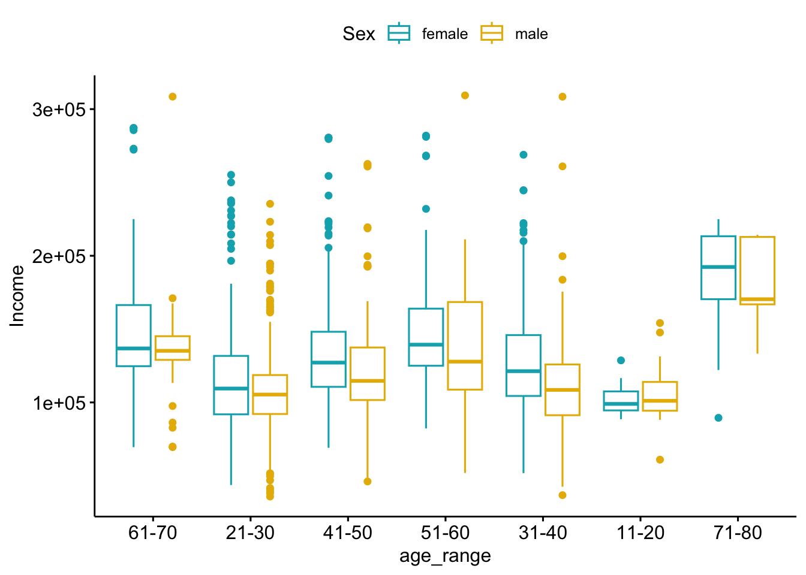

library(tidyverse)
library(knitr)
library(kableExtra)
library(descr)
library(ggplot2)
library(dbplyr)
library(ggpubr)
library(Rmisc)
library(lattice)
library(plyr)Second Assignment
Libraries
Import Data
population <- read.csv2("~/Desktop/Statistics/sgdata.csv", header=TRUE, sep=",")1. Choose one or two variables that are relevant to your research.
sex –> 0 is female, and 1 is male. I am going to clean this up to male and female.
# edit population sex data from 0 and 1
population <- population |>
mutate(Sex = str_replace(Sex, "0", "female")) |>
mutate(Sex = str_replace(Sex, "1", "male"))age –> age of participant
age_range -> this is a variable I have created by grouping the ages into brackets of 10 years
# create the age_range variable
population <- population |>
mutate("age_range" = case_when(
Age <= 10 ~ "under 10",
Age <= 20 ~ "11-20",
Age <= 30 ~ "21-30",
Age <= 40 ~ "31-40",
Age <= 50 ~ "41-50",
Age <= 60 ~ "51-60",
Age <= 70 ~ "61-70",
Age <= 80 ~ "71-80",
Age > 80 ~ "81-+"))income –> Annual income in monetary units
Research question: As age increases, does income increase? Does sex have an affect on income across age brackets?
2. Estimate parameters and test hypotheses for the selected variable(s), both individually and in relation to other variables, including socioeconomic variables if available.
I am going to look at our two continuous variables and estimate the population parameters.
Age Distribution
ggplot(data = population, mapping = aes(Age)) +
geom_histogram()`stat_bin()` using `bins = 30`. Pick better value `binwidth`.
The data does not have a normal distribution, and has an unknown mean and unknown variance. We would use the formula
CI(μx)(1-α)%= x̄ ∓ zα/2 * sx / √n
Age Confidence Intervals
confidence_interval_variable <- function (x, ci = 0.95)
{
standard_deviation <- sd(x)
sample_size <- length(x)
Margin_Error <- abs(qt((1-ci)/2,df=sample_size-1))* standard_deviation/sqrt(sample_size)
df_out <-
data.frame(
sample_size=length(x),
Mean=mean(x), sd=sd(x),
Margin_Error=Margin_Error,
'CI lower limit'=(mean(x) - Margin_Error),
'CI Upper limit'=(mean(x) + Margin_Error)) |>
tidyr::pivot_longer(
names_to = "Measurements",
values_to ="values", 1:6
)
return(df_out)
}
confidence_interval_variable(population$Age, ci=0.95)# A tibble: 6 × 2
Measurements values
<chr> <dbl>
1 sample_size 2000
2 Mean 35.9
3 sd 11.7
4 Margin_Error 0.514
5 CI.lower.limit 35.4
6 CI.Upper.limit 36.4 We can say with 95% confidence that the population’s actual mean is between 35.395 and 36.423. The dataset does not say which population this is from, but the average world age is 30.9 and the average US age is 39.1. So this seems more or less accurate.
Income Distribution
ggplot(data = population, mapping = aes(Income)) +
geom_histogram()`stat_bin()` using `bins = 30`. Pick better value `binwidth`.
The data does not have a normal distribution, and has an unknown mean and unknown variance. We would use the formula
CI(μx)(1-α)%= x̄ ∓ zα/2 * sx / √n
Income Confidence Intervals
confidence_interval_variable(population$Income, ci=0.95)# A tibble: 6 × 2
Measurements values
<chr> <dbl>
1 sample_size 2000
2 Mean 120954.
3 sd 38109.
4 Margin_Error 1671.
5 CI.lower.limit 119283.
6 CI.Upper.limit 122626.We can say with 95% confidence that the population’s actual Income mean is between 119,283.25 and 122,625.59 monetary units.
Age by Sex Confidence Intervals
confidence_interval_gender <- summarySE(
population,
measurevar="Age",
groupvars="Sex", na.rm=T,
conf.interval = .95
)
confidence_interval_gender$lower_bound <- confidence_interval_gender$Age - confidence_interval_gender$ci
confidence_interval_gender$upper_bound <- confidence_interval_gender$Age + confidence_interval_gender$ci
confidence_interval_gender Sex N Age sd se ci lower_bound upper_bound
1 female 1086 37.87477 11.54901 0.3504531 0.6876426 37.18713 38.56241
2 male 914 33.57330 11.49559 0.3802402 0.7462464 32.82706 34.31955graf.point1 <-
ggplot(
confidence_interval_gender,
aes(x=Sex, y=Age)) +
geom_point(size = 3) +
ylim(30,40)
graf.point1
graf.point <-
graf.point1 +
geom_errorbar(
aes(ymin=Age-ci, ymax=Age+ci)) +
ylab("Age") +
ggtitle("95% Confidence interval for the mean age by gender")
graf.point
We can say with 95% confidence that the population’s actual age for males is between 32.83 and 34.32 years. We can say with 95% confidence that the population’s actual age for females is between 37.19 and 38.56 years.
Income by Age by Gender
ci_gender_income <-
summarySE(
population,
measurevar = "Income",
groupvars = c("Sex","age_range"),
na.rm=T)
ci_gender_income$lower_bound <-
ci_gender_income$Income - ci_gender_income$ci
ci_gender_income$upper_bound <-
ci_gender_income$Income + ci_gender_income$ci
ci_gender_income Sex age_range N Income sd se ci lower_bound
1 female 11-20 11 102478.8 12032.69 3627.993 8083.671 94395.15
2 female 21-30 311 114910.7 38896.43 2205.614 4339.868 110570.88
3 female 31-40 401 125831.8 33284.15 1662.131 3267.604 122564.20
4 female 41-50 207 134079.8 39776.22 2764.638 5450.614 128629.19
5 female 51-60 86 150308.5 42442.06 4576.645 9099.596 141208.90
6 female 61-70 61 149962.7 49297.21 6311.861 12625.601 137337.12
7 female 71-80 9 179117.3 45303.63 15101.209 34823.450 144293.88
8 male 11-20 20 106573.9 21400.01 4785.189 10015.515 96558.39
9 male 21-30 467 105970.8 28445.22 1316.288 2586.595 103384.23
10 male 31-40 225 111370.6 31307.11 2087.141 4112.943 107257.70
11 male 41-50 110 122962.2 40591.78 3870.274 7670.757 115291.42
12 male 51-60 55 137073.9 45394.29 6120.965 12271.796 124802.06
13 male 61-70 30 137478.5 41877.17 7645.691 15637.194 121841.31
14 male 71-80 7 182491.4 31471.14 11894.974 29105.954 153385.47
upper_bound
1 110562.5
2 119250.6
3 129099.4
4 139530.4
5 159408.1
6 162588.3
7 213940.8
8 116589.4
9 108557.4
10 115483.6
11 130632.9
12 149345.7
13 153115.7
14 211597.4graf.point1 <-
ggplot(
ci_gender_income,
aes(x=age_range, y=Income, colour=Sex)) +
geom_point()
graf.point2 <-
graf.point1 +
geom_errorbar(
aes(ymin = Income-ci, ymax = Income+ci),
width = 0.2) +
ylab("Income") +
ggtitle("95% Confidence Interval for the Mean Income by Sex and Age Range")
graf.point2
We can say with 95% confidence that the population’s mean income for females is between 94,395.15 and 213,940.80 monetary units. We can say with 95% confidence that the population’s mean income for males is between 96558.39 and 211,597.4 monetary units. As age increases, income increases for both males and females.
Hypothesis Testing
population |>
summarize("mean_income" = mean(Income, na.rm = TRUE)) mean_income
1 120954.4Null hypothesis (H0)
The average income for the population is 120,954.40 monetary units.
Alternative hypothesis (H1)
The average income for the population is less than 120,954.40 monetary units.
t.test(population$Income, y=NULL,alternative="less",mu=120954.4)
One Sample t-test
data: population$Income
t = 2.2297e-05, df = 1999, p-value = 0.5
alternative hypothesis: true mean is less than 120954.4
95 percent confidence interval:
-Inf 122356.7
sample estimates:
mean of x
120954.4 Because p is greater than 0.05, there is no evidence to reject the null hypothesis. The population’s average income is consistent with the sample average income of 120,954.40 monetary units.
population |>
summarize("mean_age" = mean(Age, na.rm = TRUE)) mean_age
1 35.909Null hypothesis (H0)
The average age for the population is 35.91 years.
Alternative hypothesis (H1)
The average age for the population is less than 35.91 years.
t.test(population$Age, y=NULL,alternative="less",mu=35.91)
One Sample t-test
data: population$Age
t = -0.003816, df = 1999, p-value = 0.4985
alternative hypothesis: true mean is less than 35.91
95 percent confidence interval:
-Inf 36.34024
sample estimates:
mean of x
35.909 Because p is greater than 0.05, there is no evidence to reject the null hypothesis. The population’s average age is consistent with the sample average age of 35.91 years.
ANOVA Test
ggboxplot(population, x = "age_range", y = "Income", color = "Sex",
palette = c("#00AFBB", "#E7B800","orange"))
We are going to look at a two-way ANOVA test, since there are 3 variables: age, income, and sex.
Hypothesis 1: Mean income is the same for males and females.
Hypothesis 2: Mean income is the same across age ranges.
Hypothesis 3: There is no interaction between sex and age range.
On visual inspection, it seems like income is higher for both sexes at 71-80. Additionally, in all age ranges but 11-20, women earn on average more than men.
res.aov <- aov(Income ~ age_range+Sex, data = population)
summary(res.aov) Df Sum Sq Mean Sq F value Pr(>F)
age_range 6 3.322e+11 5.536e+10 43.88 < 2e-16 ***
Sex 1 5.796e+10 5.796e+10 45.94 1.6e-11 ***
Residuals 1992 2.513e+12 1.262e+09
---
Signif. codes: 0 '***' 0.001 '**' 0.01 '*' 0.05 '.' 0.1 ' ' 1Age range has a p-value of 2e-16 which is extremely significant. This means we can reject Hypothesis 2, that mean income is the same across age ranges.
Sex has a p-value of 1.6e-11 which is also extremely significant. This means we can reject Hypothesis 1, that mean income is the same across sexes.
3. Provide final interpretations and conclusions.
The data for age is positively skewed.
The data for income is positively skewed.
We can say with 95% confidence that the population’s actual mean age is between 35.395 and 36.423 years.
We can say with 95% confidence that the population’s actual Income mean is between 119,283.25 and 122,625.59 monetary units.
We can say with 95% confidence that the population’s actual age for males is between 32.83 and 34.32 years. We can say with 95% confidence that the population’s actual age for females is between 37.19 and 38.56 years.
Females earn more in every age bracket except 11-20. As age increases, so does income.
The population’s average income is consistent with the sample average income of 120,954.40 monetary units.
Both age and sex have an impact on income in this sample.